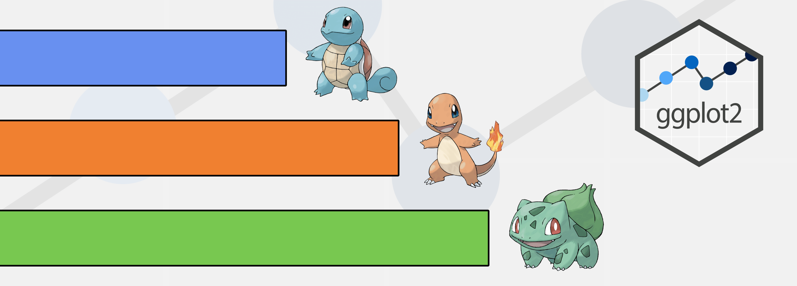

install.packages(c("dplyr", "ggplot2",
"ggpath", "pokemon"))ggplot2 101
ggplot2
dataviz
Getting started with data visualization

Before we start…
This is a material adapted from my class on Data Visualization taught in the Introduction to R course for my postgraduate program. The aim was not to present everything about ggplot2, just the most important that can be used in scientific articles.
As this may be useful to more people, I decided to make it available to everyone here. Feel free to share it with others!
Used packages
In this lesson we will use the following packages📦:
A Grammar of Data Manipulation • dplyr{dplyr} for data manipulationCreate Elegant Data Visualisations Using the Grammar of Graphics • ggplot2{ggplot2} to create chartsGitHub - mrcaseb/ggpath: Robust Image Rendering Support for ‘ggplot2’{ggpath} to plot images in a much easier wayGitHub - williamorim/pokemon: Pokemon Data{pokemon} to get the pokemon table
To install the packages, we use the following script:
Now that we have the packages installed, just load them.
The data
To create our charts, we need a dataset. We’ll use the
pokemon_df <- pokemon::pokemonCharts with R base
One way to create graphs is to use R base itself, which is very simple but allows quick visualizations.
We can create scatter plots, for example.
plot(height ~ weight, data = pokemon_df)
The problem begins when we want to make these charts more appealing
plot(height ~ weight, data = pokemon_df,
main = "Title",
xlab = "Mass (kg)", ylab = "Height (m)",
pch = 19, frame = FALSE)
abline(lm(height ~ weight, data = pokemon_df), col = "blue")
It’s confusing and I find it very difficult to make any chart like this more appealing.
Charts with ggplot2
But now let’s get to know the
The magic here is that this package incorporated the grammar of graphics (hence the gg), which brought several fundamentals to be followed. One of them is the creation of graphics in layers, as if it were a painting!

This package is already included in the
If we just run ggplot(), we’ll get a blank canvas.
ggplot()
Now we have to add our dataset and what our axes will be.
Whenever we are talking about a variable from our dataset, we have to put it inside the aes() argument, which stands for aesthetics.

In fact, as ggplot2 works in layers, we can use it as follows:

As ggplot2 is part of the pokemon_df and then create the ggplot…”. The good thing about this approach is that, as ggplot already knows the dataset beforehand, it helps us select the variables (press tab before writing the variables).

Now we have our chart with the axes delimited, and we can add as many layers as we like. The principle of ggplot is similar to pipe, where the information is passed directly to the layer below, so we don’t need to add the data again.
Geometries
Geometries are functions that start with geom_*. There are lots of them and we can get a little help with ggplot2 cheatsheet.
First, let’s create a scatterplot
pokemon_df %>%
ggplot(aes(x = weight,
y = height))+
geom_point()
To add another layer of geometry, just add another layer to this canvas. Let’s add a trend line with the geom_smooth() function.
pokemon_df %>%
ggplot(aes(x = weight,
y = height))+
geom_point()+
geom_smooth()`geom_smooth()` using method = 'loess' and formula = 'y ~ x'
We can add a linear trend line with the argument method = "lm"!
pokemon_df %>%
ggplot(aes(x = weight,
y = height))+
geom_point()+
geom_smooth(method = "lm")`geom_smooth()` using formula = 'y ~ x'
Here we can see how ggplot2 works like a painting. As geom_smooth() was called after geom_point(), it is plotted on top.
Let’s look at the same example but inverting these geometries.
pokemon_df %>%
ggplot(aes(x = weight,
y = height))+
geom_smooth(method = "lm")+
geom_point()`geom_smooth()` using formula = 'y ~ x'
Let’s make a boxplot (using the geom_boxplot geometry) of the type of pokemon by height
pokemon_df %>%
ggplot(aes(x = type_1, y = height))+
geom_boxplot()
Now let’s make a column chart (using the geom_col() geometry) of the pokemons’ attacks.

Whoa! We have a lot of data! Let’s filter only the starter pokemons and their evolutions to plot.
Let’s test it!

We can invert the axes, just switch. Especially with large texts, it’s best to keep them on the y-axis.

The pokemons are not in the order we would like (as in the dataset), they are in alphabetical order. So we have to sort them by id, but to be sorted we need to consider them as factors.
Let’s see if it worked using the <...>
glimpse(starters2)Rows: 9
Columns: 22
$ id <dbl> 1, 2, 3, 4, 5, 6, 7, 8, 9
$ pokemon <fct> bulbasaur, ivysaur, venusaur, charmander, charmeleon, …
$ species_id <dbl> 1, 2, 3, 4, 5, 6, 7, 8, 9
$ height <dbl> 0.7, 1.0, 2.0, 0.6, 1.1, 1.7, 0.5, 1.0, 1.6
$ weight <dbl> 6.9, 13.0, 100.0, 8.5, 19.0, 90.5, 9.0, 22.5, 85.5
$ base_experience <dbl> 64, 142, 236, 62, 142, 240, 63, 142, 239
$ type_1 <chr> "grass", "grass", "grass", "fire", "fire", "fire", "wa…
$ type_2 <chr> "poison", "poison", "poison", NA, NA, "flying", NA, NA…
$ hp <dbl> 45, 60, 80, 39, 58, 78, 44, 59, 79
$ attack <dbl> 49, 62, 82, 52, 64, 84, 48, 63, 83
$ defense <dbl> 49, 63, 83, 43, 58, 78, 65, 80, 100
$ special_attack <dbl> 65, 80, 100, 60, 80, 109, 50, 65, 85
$ special_defense <dbl> 65, 80, 100, 50, 65, 85, 64, 80, 105
$ speed <dbl> 45, 60, 80, 65, 80, 100, 43, 58, 78
$ color_1 <chr> "#78C850", "#78C850", "#78C850", "#F08030", "#F08030",…
$ color_2 <chr> "#A040A0", "#A040A0", "#A040A0", NA, NA, "#A890F0", NA…
$ color_f <chr> "#81A763", "#81A763", "#81A763", NA, NA, "#DE835E", NA…
$ egg_group_1 <chr> "monster", "monster", "monster", "monster", "monster",…
$ egg_group_2 <chr> "plant", "plant", "plant", "dragon", "dragon", "dragon…
$ url_icon <chr> "//archives.bulbagarden.net/media/upload/7/7b/001MS6.p…
$ generation_id <dbl> 1, 1, 1, 1, 1, 1, 1, 1, 1
$ url_image <chr> "https://raw.githubusercontent.com/HybridShivam/Pokemo…Look how it’s sorted now!

These charts are missing colors!
Now let’s use the color and fill arguments. When the shape is solid, we only use color, if it has an outline and a filling, we use color and fill, respectively.
We can color according to any variable, in this case we’ll color by type!
Note that we can determine the variable in the ggplot() function and it will be used for all the following ones. If we only want to apply it to a single layer, we only add it to that layer.

Now we can add the outline. As it’s not a variable (it’s a fixed color), it doesn’t have to go inside aes()

Labels
Every chart can have a title, subtitle, caption, axis title, etc.
All this can be determined using the labs() function within ggplot. Note that the legend is created according to the fill variable, so the title of the legend will follow this variable.

Scales
What if we want to edit the scales? In that case we’ll use the scale_* set of functions.
Let’s edit the X axis. The breaks are every 20 attack points, let’s put them every 10 points. As the x-axis is continuous, we’ll use the scale_x_continuous() function. The breaks argument helps us with this task!
starters2 %>%
ggplot(aes(x = attack, y = pokemon, fill = type_1))+
geom_col(color = "black")+
scale_x_continuous(breaks = seq(0,200,10))
Colors can also be defined using the scale_* function. These colors are not exactly what we want, we can define them manually using the scale_fill_manual() function.
As the colors are defined according to type, we’ll use them as a basis. The dataset itself provides the colors for each type. For the water type we’ll use the color #6890F0◉, for the fire type we’ll use the color #F08030◉ and for the grass type we’ll use the color #78C850◉.
starters2 %>%
ggplot(aes(x = attack, y = pokemon, fill = type_1))+
geom_col(color = "black")+
scale_fill_manual(
values = c(
"water" = "#6890F0",
"fire" = "#F08030",
"grass" = "#78C850"
)
)
In addition to defining the colors, we can also determine the labels that each color will have in the legend. We’ll do this within the scale function too, but with the labels argument.

Themes
But these charts aren’t so pretty yet, we can edit anything in the charts, from the background color to the font!
ggplot2 already has some pre-defined themes. Let’s try them out
This is theme_bw()
starters2 %>%
ggplot(aes(x = attack, y = pokemon, fill = type_1))+
geom_col(color = "black")+
scale_fill_manual(
values = c(
"water" = "#6890F0",
"fire" = "#F08030",
"grass" = "#78C850"
)
)+
theme_bw()
I really like theme_classic()
starters2 %>%
ggplot(aes(x = attack, y = pokemon, fill = type_1))+
geom_col(color = "black")+
scale_fill_manual(
values = c(
"water" = "#6890F0",
"fire" = "#F08030",
"grass" = "#78C850"
)
)+
theme_classic()
theme_minimal() is also widely used.
starters2 %>%
ggplot(aes(x = attack, y = pokemon, fill = type_1))+
geom_col(color = "black")+
scale_fill_manual(
values = c(
"water" = "#6890F0",
"fire" = "#F08030",
"grass" = "#78C850"
)
)+
theme_minimal()
The theme_void() maintains only the geometries of the generated chart.
starters2 %>%
ggplot(aes(x = attack, y = pokemon, fill = type_1))+
geom_col(color = "black")+
scale_fill_manual(
values = c(
"water" = "#6890F0",
"fire" = "#F08030",
"grass" = "#78C850"
)
)+
theme_void()
But we can edit anything within the chosen theme too. These functions are just predetermined configurations.
Most of the parameters can be seen on this website. To change the theme parameters, we add the arguments to the theme() function.
Let’s delete the title of the axes!
starters2 %>%
ggplot(aes(x = attack, y = pokemon, fill = type_1))+
geom_col(color = "black")+
scale_fill_manual(
values = c(
"water" = "#6890F0",
"fire" = "#F08030",
"grass" = "#78C850"
)
)+
theme(
axis.title = element_blank()
)
Or change the background of the chart. Notice that we have plot (the whole chart) and panel (just the panel between the axes)
starters2 %>%
ggplot(aes(x = attack, y = pokemon, fill = type_1))+
geom_col(color = "black")+
scale_fill_manual(
values = c(
"water" = "#6890F0",
"fire" = "#F08030",
"grass" = "#78C850"
)
)+
theme(
plot.background = element_rect(fill = "pink"),
panel.background = element_rect(fill = "yellow")
)
Let’s change the grid lines!
starters2 %>%
ggplot(aes(x = attack, y = pokemon, fill = type_1))+
geom_col(color = "black")+
scale_fill_manual(
values = c(
"water" = "#6890F0",
"fire" = "#F08030",
"grass" = "#78C850"
)
)+
theme(
plot.background = element_rect(fill = "pink"),
panel.background = element_rect(fill = "yellow",
color = "blue"),
panel.grid.major = element_line(color = "green"),
panel.grid.major.x = element_line(linetype = "dashed"),
panel.grid.minor.x = element_line(color = "black")
)
Oh my goodness! The chart isn’t pretty, but it’s didactic! (But don’t ever do something like that for real, please)
Facets
We often have a lot of information to show in just one chart. For this we can use the idea of small multiples with the facet_wrap() function!
pokemon_df %>%
ggplot(aes(x = attack,
y = defense,
color = generation_id))+
geom_point()+
facet_wrap(.~generation_id)
In this case, ggplot interpreted the generation_id column as a continuous number. But in this case each generation is independent of another. We can tell ggplot2 to interpret this variable as a factor.
pokemon_df %>%
ggplot(aes(x = attack,
y = defense,
color = factor(generation_id)))+
geom_point()+
facet_wrap(.~factor(generation_id))
We can use the facets with other data too.
pokemon_df %>%
ggplot(aes(x = attack,
y = defense,
color = type_1))+
geom_point()+
facet_wrap(.~type_1)
Plotting images
If we want to put images in our charts, the best indication is to use the package
To do this, use the geom_from_path() function. All we need to do is enter the column with the path to the picture.
One suggestion is to set the width argument to 0.1 as the pictures can get big!
library(ggpath)
starters2 %>%
ggplot(aes(x = attack, y = pokemon, fill = type_1))+
geom_col(color = "black")+
geom_from_path(aes(path = url_image),
width = 0.1)+
scale_fill_manual(
values = c(
"water" = "#6890F0",
"fire" = "#F08030",
"grass" = "#78C850"
)
)
Chart finished
Here I’ve added a few finishing touches to our chart (check the positioning of the names and figures!). Unfortunately it’s not for this post to go into all these details, but I’ve left everything in the comments!
starters2 %>%
ggplot(aes(x = attack, y = pokemon, fill = type_1))+
#add columns
geom_col(color = "black",
width = 0.5)+
#add names
geom_text(aes(label = pokemon,
color = type_1),
x = 1,
hjust = 0, #side alignment
nudge_y = 0.45, #vertical adjustment
fontface = "bold"
)+
#add figures
geom_from_path(aes(path = url_image),
width = 0.1, #width relative to total
hjust = 0 #side alignment
)+
#add vertical line
geom_vline(xintercept = 0)+
#expand x-axis
scale_x_continuous(
expand = expansion(mult = c(0,0.1)) #expand left-right
)+
#edit colors (will affect text that uses color)
scale_color_manual(
values = c(
"water" = "#6890F0",
"fire" = "#F08030",
"grass" = "#78C850"
)
)+
#edit colors (will affect the column that uses fill)
scale_fill_manual(
values = c(
"water" = "#6890F0",
"fire" = "#F08030",
"grass" = "#78C850"
)
)+
#edit labs
labs(
x = "Attack",
caption = "Bruno Mioto - @BrunoHMioto"
)+
#use initial theme
theme_classic()+
#edit theme
theme(
#remove all subtitles
legend.position = "none",
#remove y-axis title
axis.title.y = element_blank(),
#remove text from y-axis
axis.text.y = element_blank(),
#remove ticks
axis.ticks = element_blank(),
#remove axes
axis.line = element_blank(),
#add grid line - major
panel.grid.major.x = element_line(),
#add dotted grid line - minor
panel.grid.minor.x = element_line(linetype = "dashed"),
#increase plot margins
plot.margin = margin(10,10,10,10,"pt"),
#change the color of the plot background
plot.background = element_rect(fill = "#f1f1f1", color = NA),
#change the background color of the panel
panel.background = element_rect(fill = "#f1f1f1", color = NA)
)+
#doesn't crop the images that come out of the panel
coord_cartesian(
clip = "off"
)
Everything we’ve seen so far is the basics of the basics in ggplot2, but it already allows us to do a lot of cool stuff! There are several examples of charts with ggplot2 here, and some ready-made scripts here!
If you found this content useful in any way, share it with your friends!
Would you like a workshop with this material? Get in touch!